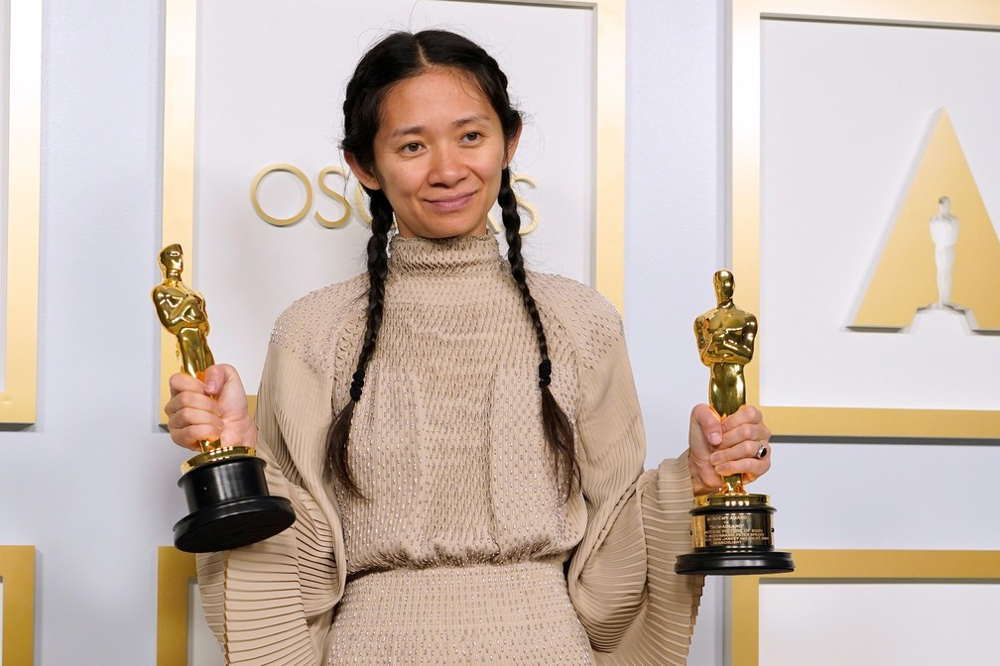
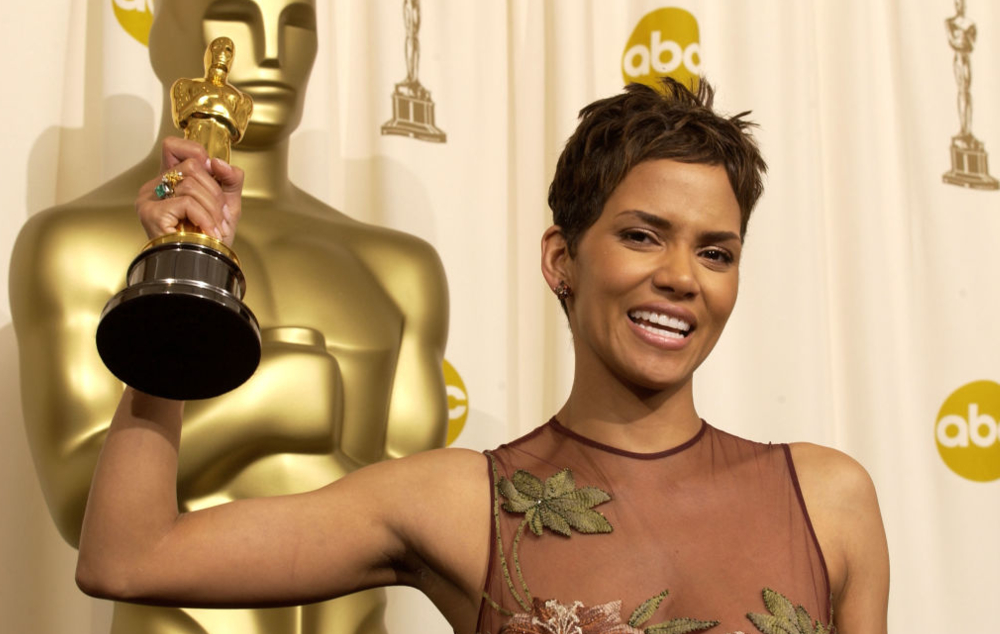
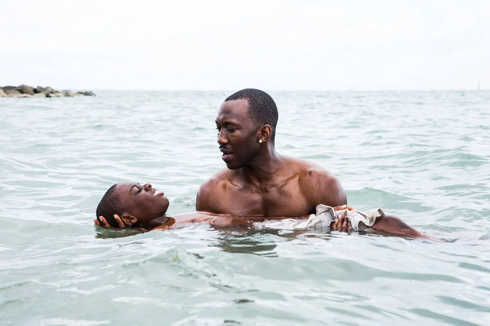

Oito anos após o movimento do #OscarsSoWhite, os Academy Awards continuam a caminhar muito lentamente em direção a categorias mais inclusivas e diversificadas. Inseridos numa indústria que ainda não se reconstruiu perante os seus próprios problemas estruturais, a Academia mantém um perfil muito restrito de quem é considerado um vencedor.
Já na sua 95ª edição, todos os anos a cerimónia dos Óscares é marcada por críticas devido à falta de diversidade nos seus nomeados. Desde a sua incepção que as categorias principais são marcadas por uma predominância de indivíduos brancos e, para além dos prémios de atuação, por homens.
As mudanças provêm de dentro – e após dois anos seguidos de categorias principais inteiramente homogéneas, em 2016 a Academia comprometeu-se em promulgar mudanças radicais nos seus requisitos de votação e recrutamento, com o objetivo de aumentar a diversidade dos seus membros.
Composto por mais de 10.000 indivíduos, com uma média de 63 anos no total, o núcleo eleitoral dos Óscares tem revelado, deste modo, certas alterações.
Em 2021, a Academia convidou 395 membros – 46% destes sendo mulheres e 39% sendo pertencentes a grupos étnicos minoritários – e em 2022, 397 – 44% membros do género feminino e 37% representando minorias étnicas. Este já é um passo na direção prometida, no entanto, quando conjugados com os membros já afiliados, os números ficam aquém do esperado.
Em 2012, apenas 6% dos eleitores pertenciam a comunidades étnicas minoritárias. Passado uma década, estas comunidades representam agora 19% da Academia, uma diferença de 13 pontos percentuais. Apesar desta evolução, ainda existe uma grande assimetria, sendo que 81% dos eleitores são indivíduos brancos..
Fonte: Los Angeles Times 2012 e 2022
Além disso, em 2012, apenas 23% da Academia era composta por mulheres. Até 2022, este número subiu para 34%, ocorrendo um aumento de 11 pontos percentuais.
Fonte: Los Angeles Times 2012 e 2022
A premiação de Melhor Realizador é historicamente uniforme – ao longo de 93 anos, 65 realizadores americanos, brancos e do género masculino (87,8%) venceram este prémio de um total de 74. Até um homem pertencente a uma comunidade etnicamente minoritária ter a chance de vencer este Óscar, 60 realizadores brancos ganharam, e até uma mulher conseguir o mesmo, 63. Somente nove pessoas de grupos minoritários (12,2%) venceram nesta categoria, encontrando-se entre estas três mulheres (4,05%) e seis homens (8,10%).
Em 2006, Ang Lee foi a primeira pessoa de um grupo etnicamente minoritário a ganhar um Óscar de Melhor Realizador com o seu filme Brokeback Mountain – 78 anos após a incepção dos Academy Awards. O próximo realizador de origem asiática a ganhar nesta categoria foi o coreano Bong Joon-ho com Parasite, em 2020, 14 anos depois do primeiro Óscar de Lee. Este foi também o primeiro filme de língua não inglesa a ganhar o Óscar de Melhor Filme, o maior prémio da noite, em conjunto com Melhor Filme Internacional, Melhor Roteiro Original, Melhor Edição e Melhor Montagem.
Um ano após Bong Joon-ho, Chloé Zhao, de ascendência chinesa, torna-se a primeira mulher pertencente a uma minoria étnica a ganhar um Óscar de Melhor Realizador. Na próxima edição, Jane Campion vence com The Power of The Dog – dois anos seguidos de vencedoras do género feminino, algo inédito nesta cerimónia. Onze anos antes de Zhao, Kathryn Bigelow consagrou-se a primeira mulher a ganhar este Óscar com The Hurt Locker depois de 82 edições.
Realizadora Chloé Zhao após a sua vitória com o filme Nomadland (2021)
Em 2014, Alfonso Cuarón foi o primeiro realizador a ganhar com um filme internacional, sendo também o primeiro vencedor provindo da América Latina. Este é seguido de Alejandro González Iñárritu no ano seguinte e Guillermo Del Toro em 2018.
Existe agora uma maior tendência em nomear e premiar realizadores de comunidades minoritárias. No entanto, nenhuma pessoa negra ganhou nesta categoria, sendo que apenas seis (1,3%) foram nomeadas no total, como Barry Jenkins com Moonlight, vencedor do Melhor Filme em 2017, e Jordan Peele com Get Out. O último realizador afro-americano a ser nomeado foi Spike Lee com BlacKkKlansman em 2019, quatro anos atrás.
Ainda, apesar das vitórias consecutivas de Campion e Zhao, nenhuma realizadora foi nomeada em 2023, apesar de existirem potenciais concorrentes que foram premiadas em circuitos diferentes. Entre estas encontram-se Charlotte Wells (Aftersun), Gina Prince-Bythewood (The Woman King) e Sarah Polley (Women Talking), estando os seus filmes nomeados em outras categorias da premiação.
As categorias principais de melhor atuação estão separadas por género, mas ainda é possível verificar assimetrias em relação à etnia dos vencedores. Apenas oito pessoas de grupos minoritários (9,4%) ganharam o prémio de Melhor Ator.
José Ferrer, porto-riquenho, foi o primeiro homem de cor a ganhar esta premiação em 1951, seguido de Sidney Poitier, afro-americano, em 1964 e Ben Kingsley, de ascendência indiana, em 1983. 38 anos depois da vitória de Poitier, Denzel Washington ganhou o Óscar em 2002 com Training Day, estabelecendo-se como o ator afro-americano com mais nomeações: sete como Melhor Ator e duas como Melhor Ator Secundário. Este foi seguido de Jamie Foxx em 2005 e Forest Whitaker em 2007, sendo Will Smith o próximo ator afro-americano a ganhar este prémio 15 anos depois, em 2022.
Já Rami Malek foi o único homem de ascendência egípcia a ganhar nesta categoria com Bohemian Rhapsody em 2019.
Os problemas na premiação de Melhor Atriz são mais acentuados – só duas mulheres de grupos minoritários (2,5%) conseguiram aqui uma vitória. Em 2005, com o filme Monster’s Ball, Halle Berry tornou-se a primeira mulher afro-americana a vencer este Óscar. Esta conquista foi assinalada tanto por Berry como pelo público como um ponto de viragem para atrizes de cor na indústria cinematográfica, algo que iria abrir novas oportunidades. No entanto, foram necessários oito anos para uma atriz afro-americana ser nomeada novamente nesta categoria após Berry e, treze anos depois, a atriz continua a única vencedora negra.
Halle Berry, primeira e única mulher afro-americana a ganhar o Óscar de Melhor Atriz (2005)
Em 2023, Michelle Yeoh foi nomeada pela sua performance em Everything Everywhere All at Once, sendo a primeira mulher de origem asiática a vencer este prémio. Anteriormente a Yeoh, a única atriz asiática nomeada fora Merle Oberon em 1935 – porém, numa indústria onde não existia espaço para pessoas de comunidades etnicamente minoritárias, esta escondia as suas origens.
É possível verificar, no entanto, uma maior disposição por parte da Academia na nomeação de pessoas de grupos minoritários nas premiações de Melhor Ator e Atriz Secundários em comparação às suas categorias “irmãs”.
Entre as 84 atrizes vencedoras, oito (9,5%) são atrizes afro-americanas, duas (2,4%) têm ascendência asiática e duas provêm da América Latina (2,4%) - 12 mulheres (14,3%) no total. Ainda, entre 435 nomeações, apenas 28 (6,4%) foram atribuídas a pessoas de cor.
Em 1940, com a sua atuação em Gone With The Wind, Hattie McDaniel torna-se a primeira atriz afro-americana a ser nomeada e a vencer um prémio na história dos Óscares. Foram necessários mais 40 anos para uma segunda vitória de uma atriz afro-americana (Whoopi Goldberg em Ghost), sendo que foram nomeadas apenas seis durante este período de tempo. 16 anos após Goldberg e quatro anos depois da vitória de Halle Berry como Melhor Atriz, Jennifer Hudson vence o prémio de Melhor Atriz Secundária em 2006, seguida de Mo’Nique em 2009 e Octavia Spencer em 2011. Nos anos de 2014 e 2015, ano do movimento #OscarsSoWhite, todas as nomeadas nesta categoria foram atrizes brancas. Viola Davis, Regina King e Ariana DeBose são as mais recentes vencedoras, em 2016, 2019 e 2022 respetivamente.
Rita Moreno é a única vencedora latino-americana nesta categoria, com West Side Story em 1962. Em 2014, Lupita Nyong’o torna-se a primeira e única atriz negra não-americana (afro-mexicana) a receber um prémio de Melhor Atriz Secundária.
Miyoshi Umeki foi a primeira atriz de ascendência leste-asiática a ganhar um Óscar em 1958. Youn Yuh-jung, atriz coreana, ganhou este prémio 63 anos depois, com a sua performance em Minari, filme de língua estrangeira. Ainda, apenas oito (2,1%) mulheres asiáticas foram aqui nomeadas, estando duas delas representadas na edição mais recente. Também somente dois (2,6%) atores asiáticos foram vencedores do Óscar de Melhor Ator Secundário, Haing S. Ngor em 1985 e Ke Huy Quan 38 anos depois, em 2023 – prova da fraca representatividade da comunidade asiática nos Academy Awards ao longo dos anos.
Apenas dez (12,9%) atores de origem étnica minoritária ganharam o Óscar de Melhor Ator Secundário. Seis são atores afro-americanos (7,7%) e dois são latino-americanos (2,6%), mais os dois (2,6%) atores asiáticos já referidos.
Louis Gossett Jr. foi o primeiro ator afro-americano a ganhar esta estatueta em 1983, seguido de Denzel Washington em 1990, Cuba Gooding Jr. em 1997 e Morgan Freeman em 2005 – o mais velho vencedor afro-americano aos 67 anos.
Em 2017, Mahershala Ali torna-se o primeiro ator muçulmano a ganhar um Óscar com a longa-metragem Moonlight. Moonlight, que retrata as dificuldades que um jovem negro enfrenta no processo de reconhecimento da sua sexualidade, foi o primeiro filme com um elenco constituído inteiramente por atores afro-americanos e com um protagonista homossexual a ganhar o Óscar de Melhor Filme. Ali ganha novamente o prémio de Melhor Ator Secundário em 2019 com The Green Book.
Mahershala Ali e Alex Hibbert em Moonlight (2016)
O mais recente vencedor é Daniel Kaluuya, em 2020, no papel de Fred Hampton, um revolucionário afro-americano Marxista-Leninista, em BlacKkKlansman. Kaluuya já foi anteriormente nomeado na categoria de Melhor Ator com o filme Get Out.
O primeiro ator latino-americano a ganhar esta premiação foi o mexicano Anthony Quinn em 1953 com Viva Zapata!, vencendo novamente quatro anos depois com o filme Lust for Life. O próximo ator de ascendência latino-americana, Benicio del Toro, ganha esta estatueta 44 anos depois com Traffic.
Mesmo numa categoria onde é esperada uma maior variedade cinematográfica, a premiação de Melhor Filme Internacional é, maioritariamente, ocupada pelo cinema europeu.
Durante 95 edições, o continente europeu teve 245 (72,9%) filmes nomeados, uma diferença colossal quando comparada aos 35 (10,4%) nomeados provindos da Ásia, o segundo continente com maior representação nesta categoria. A América Latina teve 29 (8,6%) nomeados, a região do Médio Oriente 17 (5,1%) e o continente africano apenas dez (3%).
Em 75 vitórias, 59 (78,7%) foram de filmes europeus, sendo que 14 destes são italianos e 12 são franceses. Comparativamente, sete (9,5%) são filmes asiáticos (cinco deles do Japão), quatro (5,3%) têm origem na América Latina, três (4%) são africanos e dois (2,7%) são iranianos.
Denota-se uma das regras mais importantes ao funcionamento desta categoria, alvo de críticas ao longo dos anos – as submissões são realizadas pelos próprios países, estando limitados ao envio de uma longa-metragem por edição. Facilmente se destacam os problemas que surgem devido a este tipo de norma. Não são impostas limitações à quantidade de filmes americanos nomeados na restante cerimónia, no entanto existe uma quota para os filmes internacionais, restringidos a uma categoria com apenas cinco nomeados. A própria existência de uma categoria dita “internacional” cria uma barreira de acesso a todas as outras. É possível correlacionar esta restrição com a escassez de filmes estrangeiros na categoria de Melhor Filme, já que foram necessárias 92 edições para que um filme de língua não-inglesa conseguisse esse prémio.
Elenco e produção de Everything Everywhere All At Once a receber o prémio de Melhor Filme
Apesar da cerimónia dos Óscares aparentar estar a inovar e a diversificar tanto a composição dos seus eleitores como dos seus nomeados, este progresso demonstra-se lento e, por vezes, penoso para quem a vê de fora. Os problemas estruturais da indústria cinematográfica norte-americana estão inseridos de forma visceral na premiação da Academia e é difícil prever se alguma vez serão completamente resolvidos se não existir uma reestruturação completa dos seus ideais.
A cerimónia de 2023 representou um grande avanço para pessoas de descendência asiática, por exemplo, no entanto resta saber se estas vitórias farão com que a Academia continue a aprender com erros passados, expandindo o seu leque de futuros vencedores.